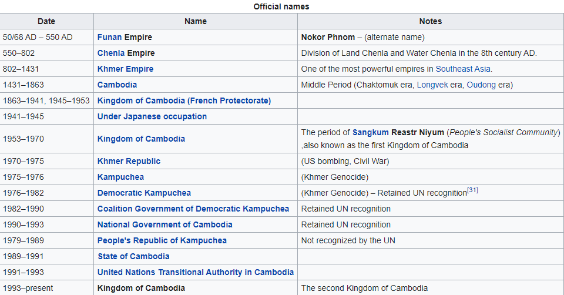
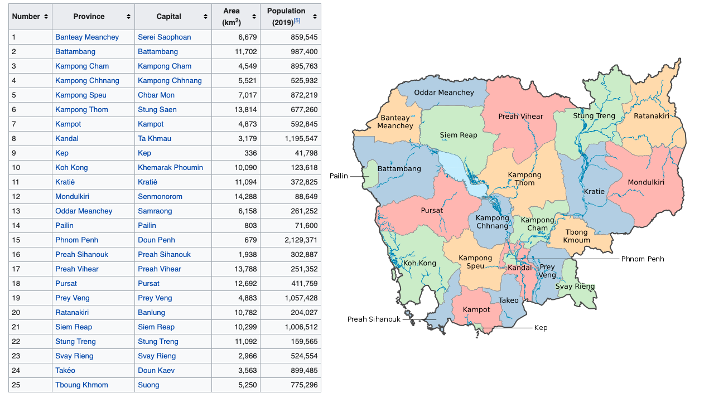

Cambodia (/kæmˈboʊdiə/ (About this soundlisten);[9] also Kampuchea /ˌkæmpʊˈtʃiːə/; Khmer: កម្ពុជា [kam.pu.ciə]; French: Cambodge), officially the Kingdom of Cambodia (Khmer: ព្រះរាជាណាចក្រកម្ពុជា, prĕəh riəciənaacak kampuciə, IPA: [prĕəh riə.ciə.naː.caʔ kam.pu.ciə]; French: Royaume du Cambodge), is a country located in the southern portion of the Indochina peninsula in Southeast Asia. It is 181,035 square kilometres (69,898 square miles) in area, bordered by Thailand to the northwest, Laos to the northeast, Vietnam to the east and the Gulf of Thailand to the southwest.
The sovereign state of Cambodia has a population of over 15 million. Buddhism is enshrined in the constitution as the official state religion, and is practised by more than 97% of the population.[4] Cambodia's minority groups include Vietnamese, Chinese, Chams and 30 hill tribes.[10] The capital and largest city is Phnom Penh, the political, economic and cultural centre of Cambodia. The kingdom is an elective constitutional monarchy with a monarch, currently Norodom Sihamoni, chosen by the Royal Council of the Throne as head of state. The head of government is the Prime Minister, currently Hun Sen, the longest serving non-royal leader in Southeast Asia, ruling Cambodia since 1985.
In 802 AD, Jayavarman II declared himself king, uniting the warring Khmer princes of Chenla under the name "Kambuja".[11] This marked the beginning of the Khmer Empire, which flourished for over 600 years, allowing successive kings to control and exert influence over much of Southeast Asia and accumulate immense power and wealth. The Indianised kingdom facilitated the spread of first Hinduism and then Buddhism to much of Southeast Asia and undertook many religious infrastructural projects throughout the region, including the construction of more than 1,000 temples and monuments in Angkor alone. Angkor Wat is the most famous of these structures and is designated as a World Heritage Site.
In the fifteenth century, after the rebellion of Ayutthaya, which was formerly ruled by the Khmer Empire, Cambodia experienced the decline of power. Cambodia faced two increasingly powerful neighbors, Ayutthaya of Thailand and Nguyen dynasty of Vietnam, and marking the downturn of Cambodia's fate. In 1863, Cambodia became a protectorate of France, and later was incorporated into French Indochina of Southeast Asia.
Cambodia gained independence from France in 1953. The Vietnam War extended into the country in 1965 with the expansion of the Ho Chi Minh Trail and establishment of the Sihanouk Trail. This led to the US bombing of Cambodia from 1969 until 1973. Following the Cambodian coup of 1970 which installed the right-wing pro-US Khmer Republic, the deposed King Sihanouk gave his support to his former enemies, the Khmer Rouge. With the support of the monarchy and North Vietnam, the Khmer Rouge emerged as a major power, taking Phnom Penh in 1975. The Khmer Rouge then carried out the Cambodian genocide from 1975 until 1979, when they were ousted by Vietnam and the Vietnamese-backed People's Republic of Kampuchea, supported by the Soviet Union, in the Cambodian–Vietnamese War.
Following the 1991 Paris Peace Accords, Cambodia was governed briefly by a United Nations mission (1992–93). The UN withdrew after holding elections in which around 90 percent of the registered voters cast ballots. The 1997 factional fighting resulted in the ousting of the government by Prime Minister Hun Sen and the Cambodian People's Party, who remain in power as of April 2020.
Cambodia is a member of the United Nations since 1955, ASEAN, the East Asia Summit, the WTO, the Non-Aligned Movement and La Francophonie. According to several foreign organisations, the country has widespread poverty,[12] pervasive corruption,[13] lack of political freedoms,[14] low human development[15] and a high rate of hunger.[16][17][18] Cambodia has been described by Human Rights Watch's Southeast Asian Director, David Roberts, as a "relatively authoritarian coalition via a superficial democracy".[19] Constitutionally a multi-party liberal democracy,[20] the country is de facto governed under one-party rule as of 2018.[21][22]
While per capita income remains low compared to most neighboring countries, Cambodia has one of the fastest growing economies in Asia, with growth averaging 7.6 percent over the last decade. Agriculture remains the dominant economic sector, with strong growth in textiles, construction, garments and tourism leading to increased foreign investment and international trade.[23] The United Nations designates Cambodia as a least developed country.[24] The US World Justice Project's 2015 Rule of Law Index ranked Cambodia 125th out of 126 countries, far lower compared to other countries in the region.[25]
2.2 Pre-Angkorian and Angkorian era
2.5. Independence and Vietnam War
2.7. Khmer Rouge regime, 1975–1978
2.8. Vietnamese occupation and transition, 1978–1992
2.9. Restoration of the monarchy
The "Kingdom of Cambodia" is the official English name of the country. The English "Cambodia" is an anglicisation of the French "Cambodge", which in turn is the French transliteration of the Khmer កម្ពុជា kampuciə. Kampuchea is the shortened alternative to the country's official name in Khmer ព្រះរាជាណាចក្រកម្ពុជា prĕəh riəciənaacak kampuciə. The Khmer endonym Kampuchea derives from the Sanskrit name कम्बोजदेश kambojadeśa, composed of देश deśa ("land of" or "country of") and कम्बोज kamboja, which alludes to the foundation myths of the first ancient Khmer kingdom.[26] The term Cambodia was already in use in Europe as early as 1524, since Antonio Pigafetta (an Italian explorer who followed Ferdinand Magellan in his circumnavigation of the globe) cites it in his work Relazione del primo viaggio intorno al mondo (1524–1525) as Camogia.[27]
Colloquially, Cambodians refer to their country as either ស្រុកខ្មែរ srok khmae (Khmer pronunciation: [srok ˈkʰmae]), meaning "Khmer's Land", or the slightly more formal ប្រទេសកម្ពុជា prɑteih kampuciə (Khmer pronunciation: [prɑ.ˈteih kam.pu.ciə]), literally "Country of Kampuchea". The name "Cambodia" is used most often in the Western world while "Kampuchea" is more widely used in the East.[28][29][30]
There exists sparse evidence for a Pleistocene human occupation of present-day Cambodia, which includes quartz and quartzite pebble tools found in terraces along the Mekong River, in Stung Treng and Kratié provinces, and in Kampot Province, although their dating is unreliable.[32] Some slight archaeological evidence shows communities of hunter-gatherers inhabited the region during Holocene: the most ancient archaeological discovery site in Cambodia is considered to be the cave of L'aang Spean, in Battambang Province, which belongs to the Hoabinhian period. Excavations in its lower layers produced a series of radiocarbon dates around 6000 BC.[32][33] Upper layers in the same site gave evidence of transition to Neolithic, containing the earliest dated earthenware ceramics in Cambodia.[34]
Archaeological records for the period between Holocene and Iron Age remain equally limited. A pivotal event in Cambodian prehistory was the slow penetration of the first rice farmers from the north, which began in the late 3rd millennium BC.[35] The most curious prehistoric evidence in Cambodia are the various "circular earthworks" discovered in the red soils near Memot and in the adjacent region of Vietnam in the latter 1950s. Their function and age are still debated, but some of them possibly date from 2nd millennium BC
Other prehistoric sites of somewhat uncertain date are Samrong Sen (not far from the ancient capital of Oudong), where the first investigations began in 1875,[38] and Phum Snay, in the northern province of Banteay Meanchey.[39] An excavation at Phum Snay revealed 21 graves with iron weapons and cranial trauma which could point to conflicts in the past, possible with larger cities in Angkor.[35][40] [41] Prehistoric artefacts are often found during mining activities in Ratanakiri.[32]
Iron was worked by about 500 BC, with supporting evidence coming from the Khorat Plateau, in modern-day Thailand. In Cambodia, some Iron Age settlements were found beneath Baksei Chamkrong and other Angkorian temples while circular earthworks were found beneath Lovea a few kilometres north-west of Angkor. Burials, much richer than other types of finds, testify to improvement of food availability and trade (even on long distances: in the 4th century BC trade relations with India were already opened) and the existence of a social structure and labour organisation.
Among the artefacts from the Iron Age, glass beads are important evidence. Different kinds of glass beads recovered from several sites across Cambodia, such as the Phum Snay site in northwest and the Prohear site in southeast, show that there were two main trading networks at the time. The two networks were separated by time and space, which indicate that there was a shift from one network to the other at about 2nd–4th century AD, probably with changes in socio-political powers.
During the 3rd, 4th, and 5th centuries, the Indianised states of Funan and its successor, Chenla, coalesced in present-day Cambodia and southwestern Vietnam. For more than 2,000 years, what was to become Cambodia absorbed influences from India, passing them on to other Southeast Asian civilisations that are now Thailand and Laos.[43] Little else is known for certain of these polities, however Chinese chronicles and tribute records do make mention of them. It is believed that the territory of Funan may have held the port known to Alexandrian geographer Claudius Ptolemy as "Kattigara". The Chinese chronicles suggest that after Jayavarman I of Chenla died around 681, turmoil ensued which resulted in division of the kingdom into Land Chenla and Water Chenla which was loosely ruled by weak princes under the dominion of Java.
The Khmer Empire grew out of these remnants of Chenla, becoming firmly established in 802 when Jayavarman II (reigned c790-c835) declared independence from Java and proclaimed himself a Devaraja. He and his followers instituted the cult of the God-king and began a series of conquests that formed an empire which flourished in the area from the 9th to the 15th centuries.[44] During the rule of Jayavarman VIII the Angkor empire was attacked by the Mongol army of Kublai Khan, however the king was able to buy peace.[45] Around the 13th century, monks from Sri Lanka introduced Theravada Buddhism to Southeast Asia.[46] The religion spread and eventually displaced Hinduism and Mahayana Buddhism as the popular religion of Angkor; however it was not the official state religion until 1295 when Indravarman III took power.[47]
The Khmer Empire was Southeast Asia's largest empire during the 12th century. The empire's centre of power was Angkor, where a series of capitals were constructed during the empire's zenith. In 2007 an international team of researchers using satellite photographs and other modern techniques concluded that Angkor had been the largest pre-industrial city in the world with an urban sprawl of 2,980 square kilometres (1,151 square miles).[48] The city, which could have supported a population of up to one million people[49] and Angkor Wat, the best known and best-preserved religious temple at the site, still serves as a reminder of Cambodia's past as a major regional power. The empire, though in decline, remained a significant force in the region until its fall in the 15th century.
After a long series of wars with neighbouring kingdoms, Angkor was sacked by the Ayutthaya Kingdom and abandoned in 1432 because of ecological failure and infrastructure breakdown.[50][51] This led to a period of economic, social, and cultural stagnation when the kingdom's internal affairs came increasingly under the control of its neighbours. By this time, the Khmer penchant for monument building had ceased. Older faiths such as Mahayana Buddhism and the Hindu cult of the god-king had been supplanted by Theravada Buddhism.p>
The court moved the capital to Longvek where the kingdom sought to regain its glory through maritime trade. The first mention of Cambodia in European documents was in 1511 by the Portuguese. Portuguese travellers described the city as a place of flourishing wealth and foreign trade. Continued wars with Ayutthaya and the Vietnamese resulted in the loss of more territory and Longvek being conquered and destroyed by King Naresuan the Great of Ayutthaya in 1594. A new Khmer capital was established at Oudong south of Longvek in 1618, but its monarchs could survive only by entering into what amounted to alternating vassal relationships with the Siamese and Vietnamese for the next three centuries with only a few short-lived periods of relative independence.
The hill tribe people in Cambodia were "hunted incessantly and carried off as slaves by the Siamese (Thai), the Annamites (Vietnamese), and the Cambodians".[52][53]
In the nineteenth century a renewed struggle between Siam and Vietnam for control of Cambodia resulted in a period when Vietnamese officials attempted to force the Khmers to adopt Vietnamese customs. This led to several rebellions against the Vietnamese and appeals to Thailand for assistance. The Siamese–Vietnamese War (1841–1845) ended with an agreement to place the country under joint suzerainty. This later led to the signing of a treaty for French Protection of Cambodia by King Norodom Prohmborirak.
In 1863, King Norodom, who had been installed by Siam,[11] sought the protection of Cambodia from Siam by French rule. In 1867, Rama IV signed a treaty with France, renouncing suzerainty over Cambodia in exchange for the control of Battambang and Siem Reap provinces which officially became part of Siam. The provinces were ceded back to Cambodia by a border treaty between France and Siam in 1907.
Cambodia continued as a protectorate of France from 1867 to 1953, administered as part of the colony of French Indochina, though occupied by the Japanese empire from 1941 to 1945.[54] Between 1874 and 1962, the total population increased from about 946,000 to 5.7 million.[55] After King Norodom's death in 1904, France manipulated the choice of king, and Sisowath, Norodom's brother, was placed on the throne. The throne became vacant in 1941 with the death of Monivong, Sisowath's son, and France passed over Monivong's son, Monireth, feeling he was too independently minded. Instead, Norodom Sihanouk, a maternal grandson of King Sisowath was enthroned. The French thought young Sihanouk would be easy to control.[54] They were wrong, however, and under the reign of King Norodom Sihanouk, Cambodia gained independence from France on 9 November 1953.[54]
Cambodia became a constitutional monarchy under King Norodom Sihanouk. When French Indochina was given independence, Cambodia lost hope of regaining control over the Mekong Delta as it was awarded to Vietnam. Formerly part of the Khmer Empire, the area had been controlled by the Vietnamese since 1698, with King Chey Chettha II granting the Vietnamese permission to settle in the area decades before.[56] This remains a diplomatic sticking point with over one million ethnic Khmers (the Khmer Krom) still living in this region. The Khmer Rouge attempted invasions to recover the territory which, in part, led to Vietnam's invasion of Cambodia and deposition of the Khmer Rouge.
In 1955, Sihanouk abdicated in favour of his father to participate in politics and was elected prime minister. Upon his father's death in 1960, Sihanouk again became head of state, taking the title of prince. As the Vietnam War progressed, Sihanouk adopted an official policy of neutrality in the Cold War. Sihanouk allowed the Vietnamese communists to use Cambodia as a sanctuary and a supply route for their arms and other aid to their armed forces fighting in South Vietnam. This policy was perceived as humiliating by many Cambodians. In December 1967 Washington Post journalist Stanley Karnow was told by Sihanouk that if the US wanted to bomb the Vietnamese communist sanctuaries, he would not object, unless Cambodians were killed.[57]
The same message was conveyed to US President Johnson's emissary Chester Bowles in January 1968.[58] However, in public Sihanouk refuted the right of the U.S. to use air strikes in Cambodia, and on 26 March he said "these criminal attacks must immediately and definitively stop". On 28 March a press conference was held and Sihanouk appealed to the international media: "I appeal to you to publicise abroad this very clear stand of Cambodia—that is, I will in any case oppose all bombings on Cambodian territory under whatever pretext." Nevertheless, the public pleas of Sihanouk were ignored and the bombing continued.[59] Members of the government and army became resentful of Sihanouk's ruling style as well as his tilt away from the United States.
While visiting Beijing in 1970 Sihanouk was ousted by a military coup led by Prime Minister General Lon Nol and Prince Sisowath Sirik Matak. US support for the coup remains unproven.[60] However, once the coup was completed, the new regime, which immediately demanded that the Vietnamese communists leave Cambodia, gained the political support of the United States. The North Vietnamese and Viet Cong forces, desperate to retain their sanctuaries and supply lines from North Vietnam, immediately launched armed attacks on the new government. The king urged his followers to help in overthrowing this government, hastening the onset of civil war.[61]
Soon Khmer Rouge rebels began using him to gain support. However, from 1970 until early 1972, the Cambodian conflict was largely one between the government and army of Cambodia, and the armed forces of North Vietnam. As they gained control of Cambodian territory, the Vietnamese communists imposed a new political infrastructure, which was eventually dominated by the Cambodian communists now referred to as the Khmer Rouge.[63] Between 1969 and 1973, Republic of Vietnam and US forces bombed Cambodia in an effort to disrupt the Viet Cong and Khmer Rouge.
Documents uncovered from the Soviet archives after 1991 reveal that the North Vietnamese attempt to overrun Cambodia in 1970 was launched at the explicit request of the Khmer Rouge and negotiated by Pol Pot's then second in command, Nuon Chea.[64] NVA units overran many Cambodian army positions while the Communist Party of Kampuchea (CPK) expanded their small-scale attacks on lines of communication. In response to the North Vietnamese invasion, US President Richard Nixon announced that US and South Vietnamese ground forces had entered Cambodia in a campaign aimed at destroying NVA base areas in Cambodia (see Cambodian Incursion).[65] Although a considerable quantity of equipment was seized or destroyed by US and South Vietnamese forces, containment of North Vietnamese forces proved elusive.
The Khmer Republic's leadership was plagued by disunity among its three principal figures: Lon Nol, Sihanouk's cousin Sirik Matak, and National Assembly leader In Tam. Lon Nol remained in power in part because neither of the others was prepared to take his place. In 1972, a constitution was adopted, a parliament elected, and Lon Nol became president. But disunity, the problems of transforming a 30,000-man army into a national combat force of more than 200,000 men, and spreading corruption weakened the civilian administration and army.
The Communist insurgency inside Cambodia continued to grow, aided by supplies and military support from North Vietnam. Pol Pot and Ieng Sary asserted their dominance over the Vietnamese-trained communists, many of whom were purged. At the same time, the CPK forces became stronger and more independent of their Vietnamese patrons. By 1973, the CPK were fighting battles against government forces with little or no North Vietnamese troop support, and they controlled nearly 60% of Cambodia's territory and 25% of its population. The government made three unsuccessful attempts to enter into negotiations with the insurgents, but by 1974, the CPK were operating openly as divisions, and some of the NVA combat forces had moved into South Vietnam. Lon Nol's control was reduced to small enclaves around the cities and main transportation routes. More than 2 million refugees from the war lived in Phnom Penh and other cities.
On New Year's Day 1975, Communist troops launched an offensive which, in 117 days of the hardest fighting of the war, collapsed the Khmer Republic. Simultaneous attacks around the perimeter of Phnom Penh pinned down Republican forces, while other CPK units overran fire bases controlling the vital lower Mekong resupply route. A US-funded airlift of ammunition and rice ended when Congress refused additional aid for Cambodia. The Lon Nol government in Phnom Penh surrendered on 17 April 1975, just five days after the US mission evacuated Cambodia.[66]
The Khmer Rouge reached Phnom Penh and took power in 1975. Led by Pol Pot, they changed the official name of the country to Democratic Kampuchea. The new regime modelled itself on Maoist China during the Great Leap Forward, immediately evacuated the cities, and sent the entire population on forced marches to rural work projects. They attempted to rebuild the country's agriculture on the model of the 11th century, discarded Western medicine and destroyed temples, libraries, and anything considered Western.
Estimates as to how many people were killed by the Khmer Rouge regime range from approximately one to three million; the most commonly cited figure is two million (about a quarter of the population).[67][68][69] This era gave rise to the term Killing Fields, and the prison Tuol Sleng became notorious for its history of mass killing. Hundreds of thousands fled across the border into neighbouring Thailand. The regime disproportionately targeted ethnic minority groups. The Cham Muslims suffered serious purges with as much as half of their population exterminated.[70] Pol Pot was determined to keep his power and disenfranchise any enemies or potential threats, and thus increased his violent and aggressive actions against his people.
Forced repatriation in 1970 and deaths during the Khmer Rouge era reduced the Vietnamese population in Cambodia from between 250,000 and 300,000 in 1969 to a reported 56,000 in 1984.[55] However, most of the victims of the Khmer Rouge regime were not ethnic minorities but ethnic Khmer. Professionals, such as doctors, lawyers and teachers, were also targeted. According to Robert D. Kaplan, "eyeglasses were as deadly as the yellow star" as they were seen as a sign of intellectualism.[72]
Religious institutions were not spared by the Khmer Rouge either. Religion was so viciously persecuted to such a terrifying extent that the vast majority of Cambodia's historic architecture, 95% of Cambodia's Buddhist temples, was completely destroyed.[73]
In November 1978, Vietnamese troops invaded Cambodia in response to border raids by the Khmer Rouge.[74] The People's Republic of Kampuchea (PRK), a pro-Soviet state led by the Kampuchean People's Revolutionary Party, a party created by the Vietnamese in 1951, and led by a group of Khmer Rouge who had fled Cambodia to avoid being purged by Pol Pot and Ta Mok, was established.[clarification needed][75] It was fully beholden to the occupying Vietnamese army and under direction of the Vietnamese ambassador to Phnom Penh. Its arms came from Vietnam and the Soviet Union.[76]
In opposition to the newly created state, a government-in-exile referred to as the Coalition Government of Democratic Kampuchea (CGDK) was formed in 1981 from three factions.[76] This consisted of the Khmer Rouge, a royalist faction led by Sihanouk, and the Khmer People's National Liberation Front. Its credentials were recognised by the United Nations. The Khmer Rouge representative to the UN, Thiounn Prasith, was retained, but he had to work in consultation with representatives of the noncommunist Cambodian parties.[77][78] The refusal of Vietnam to withdraw from Cambodia led to economic sanctions[79] by the US and its allies.[specify]
Peace efforts began in Paris in 1989 under the State of Cambodia, culminating two years later in October 1991 in a Paris Comprehensive Peace Settlement. The UN was given a mandate to enforce a ceasefire and deal with refugees and disarmament known as the United Nations Transitional Authority in Cambodia (UNTAC).[80]
In 1993, Norodom Sihanouk was restored as King of Cambodia, but all power was in the hands of the government established after the UNTAC sponsored elections. The stability established following the conflict was shaken in 1997 by a coup d'état led by the co-Prime Minister Hun Sen against the non-communist parties in the government.[81] After its government was able to stabilize under Sen, Cambodia was accepted into the Association of Southeast Asian Nations (ASEAN) on 30 April 1999.[82][83] In recent years, reconstruction efforts have progressed and led to some political stability through a multiparty democracy under a constitutional monarchy.[4] Although Sen's rule has been marred by human rights abuses and corruption,[84] most Cambodian citizens through the 2000s maintained approval of the government; interviews with rural Cambodians in 2008 displayed a preference for a stable status quo over potentially violent change.[85]
In July 2010, Kang Kek Iew was the first Khmer Rouge member found guilty of war crimes and crimes against humanity in his role as the former commandant of the S21 extermination camp and he was sentenced to life in prison.[86][87] However, Hun Sen has opposed extensive trials of former Khmer Rouge mass murderers.[88]
In August 2014, a UN-backed war crimes tribunal, the Extraordinary Chambers in the Courts of Cambodia (also known as the Khmer Rouge Tribunal), sentenced Khieu Samphan, the regime's 83-year-old former head of state, and Nuon Chea, its 88-year-old chief ideologue, to life in prison on war crimes charges for their role in the country's terror period in the 1970s. The trial began in November 2011. Former Foreign Minister Ieng Sary died in 2013, while his wife, Social Affairs Minister Ieng Thirith, was deemed unfit to stand trial due to dementia in 2012.
Cambodia has an area of 181,035 square kilometres (69,898 square miles) and lies entirely within the tropics, between latitudes 10° and 15°N, and longitudes 102° and 108°E. It borders Thailand to the north and west, Laos to the northeast, and Vietnam to the east and southeast. It has a 443-kilometre (275-mile) coastline along the Gulf of Thailand.[9][89]
Cambodia's landscape is characterised by a low-lying central plain that is surrounded by uplands and low mountains and includes the Tonle Sap (Great Lake) and the upper reaches of the Mekong River delta. Extending outward from this central region are transitional plains, thinly forested and rising to elevations of about 650 feet (200 metres) above sea level.
To the north the Cambodian plain abuts a sandstone escarpment, which forms a southward-facing cliff stretching more than 200 miles (320 kilometres) from west to east and rising abruptly above the plain to heights of 600 to 1,800 feet (180–550 metres). This cliff marks the southern limit of the Dângrêk Mountains.
Flowing south through Cambodia's eastern regions is the Mekong River. East of the Mekong the transitional plains gradually merge with the eastern highlands, a region of forested mountains and high plateaus that extend into Laos and Vietnam. In southwestern Cambodia two distinct upland blocks, the Krâvanh Mountains and the Dâmrei Mountains, form another highland region that covers much of the land area between the Tonle Sap and the Gulf of Thailand.
In this remote and largely uninhabited area, Phnom Aural, Cambodia's highest peak rises to an elevation of 5,949 feet (1,813 metres).[90] The southern coastal region adjoining the Gulf of Thailand is a narrow lowland strip, heavily wooded and sparsely populated, which is isolated from the central plain by the southwestern highlands.
The most distinctive geographical feature is the inundations of the Tonle Sap, measuring about 2,590 square kilometres (1,000 square miles) during the dry season and expanding to about 24,605 square kilometres (9,500 square miles) during the rainy season. This densely populated plain, which is devoted to wet rice cultivation, is the heartland of Cambodia.[91] Much of this area has been designated as a biosphere reserve.[91]
Cambodia's climate, like that of the rest of Southeast Asia, is dominated by monsoons, which are known as tropical wet and dry because of the distinctly marked seasonal differences.
Cambodia has a temperature range from 21 to 35 °C (70 to 95 °F) and experiences tropical monsoons. Southwest monsoons blow inland bringing moisture-laden winds from the Gulf of Thailand and Indian Ocean from May to October. The northeast monsoon ushers in the dry season, which lasts from November to April. The country experiences the heaviest precipitation from September to October with the driest period occurring from January to February.
According to the International Development Research Center and The United Nations, Cambodia is considered Southeast Asia's most vulnerable country to the effects of climate change, alongside the Philippines.[92][93] Nearly all provinces in Cambodia are affected by climate change.[94] Rural coastal populations are particularly at risk. Shortages of clean water, extreme flooding, mudslides, higher sea levels and potentially destructive storms are of particular concern, according to the Cambodia Climate Change Alliance.
Cambodia has two distinct seasons. The rainy season, which runs from May to October, can see temperatures drop to 22 °C (72 °F) and is generally accompanied with high humidity. The dry season lasts from November to April when temperatures can rise up to 40 °C (104 °F) around April. Disastrous flooding occurred in 2001 and again in 2002, with some degree of flooding almost every year.[95]
Cambodia's biodiversity is largely founded on its seasonal tropical forests, containing some 180 recorded tree species, and riparian ecosystems. There are 212 mammal species, 536 bird species, 240 reptile species, 850 freshwater fish species (Tonle Sap Lake area), and 435 marine fish species recorded by science. Much of this biodiversity is contained around the Tonle Sap Lake and the surrounding biosphere.[96]
The Tonle Sap Biosphere Reserve is a reserve surrounding the Tonle Sap lake. It encompasses the lake and nine provinces: Kampong Thom, Siem Reap, Battambang, Pursat, Kampong Chhnang, Banteay Meanchey, Pailin, Oddar Meanchey and Preah Vihear. In 1997, it was successfully nominated as a UNESCO Biosphere Reserve.[97] Other key habitats include the evergreen and dry Dipterocarp forests of Mondolkiri province, protected by Keo Seima Wildlife Sanctuary, Phnom Prich Wildlife Sanctuary, and Srepok Wildlife Sanctuary, as well as Ratanakiri province, and the Cardamom Mountains ecosystem, including Preah Monivong National Park, Botum-Sakor National Park, and the Phnom Aural Wildlife Sanctuary and Phnom Samkos Wildlife Sanctuary.
The Worldwide Fund for Nature recognises six distinct terrestrial ecoregions in Cambodia – the Cardamom Mountains rain forests, Central Indochina dry forest, Southeast Indochina dry evergreen forest, Southern Annamite Range tropical forest, Tonle Sap freshwater swamp forest, and Tonle Sap-Mekong peat swamp forest.[98]
Cambodia has a bad but improving performance in the global Environmental Performance Index (EPI) with an overall ranking of 146 out of 180 countries in 2016. This is among the worst in the Southeast Asian region, only ahead of Laos and Myanmar. The EPI was established in 2001 by the World Economic Forum as a global gauge to measure how well individual countries perform in implementing the United Nations' Sustainable Development Goals.
The environmental areas where Cambodia performs worst on the EPI (i.e. highest ranking) are air quality (148), water resource management (140) and health impacts of environmental issues (137), with the areas of sanitation, environmental impacts of fisheries and forest management following closely. Cambodia has an unusually large expanse of protected areas, both on land and at sea, with the land-based protections covering about 20% of the country. This secures Cambodia a better than average ranking of 61 in relation to biodiversity and habitat, despite the fact deforestation, illegal logging, construction and poaching are heavily deteriorating these protections and habitats in reality, partly fueled by the government's placement of economic land concessions and plantations within protected areas.[99][100][101]
The rate of deforestation in Cambodia is one of the highest in the world and it is often perceived as the most destructive, singular environmental issue in the country.[101] Cambodia's primary forest cover fell from over 70% in 1969 to just 3.1% in 2007. In total, Cambodia lost 25,000 km2 (9,700 sq mi) of forest between 1990 and 2005 – 3,340 km2 (1,290 sq mi) of which was primary forest. Since 2007, less than 3,220 km2 (1,243 sq mi) of primary forest remain with the result that the future sustainability of the forest reserves of Cambodia is under severe threat.[102][103]
In 2010–2015, the annual rate of deforestation was 1.3%. The environmental degradation also includes national parks and wildlife sanctuaries on a large scale and many endangered and endemic species are now threatened with extinction due to loss of habitats. There are many reasons for the deforestation in Cambodia, which range from opportunistic illegal loggings to large scale clearings from big construction projects and agricultural activities. The global issue of land grabbing is particularly rampant in Cambodia. The deforestation involves the local population, Cambodian businesses and authorities as well as transnational corporations from all over the world.[104][105]
Plans for hydroelectric development in the Greater Mekong Subregion, by Laos in particular, pose a "real danger to the food supply of Vietnam and Cambodia. Upstream dams will imperil the fish stocks that provide the vast majority of Cambodia's protein and could also denude the Mekong River of the silt Vietnam needs for its rice basket." The rich fisheries of Tonle Sap, the largest freshwater lake in Southeast Asia, largely supply the impoverished country's protein. The lake is unusual: It all but disappears in the dry season and then expands massively as water flow from the Mekong backs up when the rains come. "Those fish are so important for their livelihoods, both economically and nutritionally", said Gordon Holtgrieve, a professor at the University of Washington who researches Cambodia's freshwater fish and he points out that none of the dams that are either built or being built on the Mekong river "are pointing at good outcomes for the fisheries".[106]
In the 2010s, the Cambodian government and educational system has increased its involvement and co-operation with both national and international environmental groups.[107][108][109] A new National Environmental Strategy and Action Plan (NESAP) for Cambodia is to be implemented from late 2016 to 2023 and contains new ideas for how to incite a green and environmentally sustainable growth for the country.[110]
In November 2017, the U.S. cut funds to help clear unexploded ordnance including land mines and chemical weapons in Cambodia which it had dropped during the Vietnam War.[111]
National politics in Cambodia take place within the framework of the nation's constitution of 1993. The government is a constitutional monarchy operated as a parliamentary representative democracy. The Prime Minister of Cambodia, an office held by Hun Sen since 1985, is the head of government, while the King of Cambodia (currently Norodom Sihamoni) is the head of state. The prime minister is appointed by the king, on the advice and with the approval of the National Assembly. The prime minister and the ministerial appointees exercise executive power.
Legislative powers are shared by the executive and the bicameral Parliament of Cambodia (សភាតំណាងរាស្ត្រ, saphea damnang reastr), which consists of a lower house, the National Assembly (រដ្ឋសភា, rotsaphea) and an upper house, the Senate (ព្រឹទ្ធសភា, protsaphea). Members of the 123-seat Assembly are elected through a system of proportional representation and serve for a maximum term of five years. The Senate has 61 seats, two of which are appointed by the king and two others by the National Assembly, and the rest elected by the commune councillors from 24 provinces of Cambodia. Senators serve six-year terms.[112]
On 14 October 2004, King Norodom Sihamoni was selected by a special nine-member Royal Throne Council, part of a selection process that was quickly put in place after the abdication of King Norodom Sihanouk a week prior. Sihamoni's selection was endorsed by Prime Minister Hun Sen and National Assembly Speaker Prince Norodom Ranariddh (the king's half-brother and current chief advisor), both members of the throne council. He was enthroned in Phnom Penh on 29 October 2004.
Officially a multiparty democracy, in reality "the country remains a one-party state dominated by the Cambodian People's Party and Prime Minister Hun Sen, a recast Khmer Rouge official in power since 1985. The open doors to new investment during his reign have yielded the most access to a coterie of cronies of his and his wife, Bun Rany."[attribution needed][113] Cambodia's government has been described by the Human Rights Watch's Southeast Asian director, David Roberts, as a "relatively authoritarian coalition via a superficial democracy".[19]
Prime Minister Hun Sen has vowed to rule until he is 74.[114][115] He is a former Khmer Rouge member who defected. His government is regularly accused of ignoring human rights and suppressing political dissent. The 2013 election results were disputed by Hun Sen's opposition, leading to demonstrations in the capital. Demonstrators were injured and killed in Phnom Penh where a reported 20,000 protesters gathered, with some clashing with riot police.[116] From a humble farming background, Hun Sen was just 33 when he took power in 1985, and is by some considered a long ruling dictator.[117]
Since the 2017 crackdowns on political dissent and free press, Cambodia has been described as a de facto one-party state.[118][119][120]
The Cambodian People's Party (CPP) is the sole dominant-party in Cambodia. Since 2018, the CPP commands all but four seats in Parliament, including all 125 seats in the National Assembly and 58 of 62 seats in the Senate.
Hun Sen and his government have seen much controversy. Hun Sen was a former Khmer Rouge commander who was originally installed by the Vietnamese and, after the Vietnamese left the country, maintains his strong man position by violence and oppression when deemed necessary.[121] In 1997, fearing the growing power of his co–prime minister, Prince Norodom Ranariddh, Hun launched a coup, using the army to purge Ranariddh and his supporters. Ranariddh was ousted and fled to Paris while other opponents of Hun Sen were arrested, tortured, and some summarily executed.[121][122]
In addition to political oppression, the Cambodian government has been accused of corruption in the sale of vast areas of land to foreign investors resulting in the eviction of thousands of villagers[123] as well as taking bribes in exchange for grants to exploit Cambodia's oil wealth and mineral resources.[124] Cambodia is consistently listed as one of the most corrupt governments in the world.[125][126][127] Amnesty International currently recognises one prisoner of conscience in the country: 33-year-old land rights activist Yorm Bopha.[128]
Journalists covering a protest over disputed election results in Phnom Penh on 22 September 2013 say they were deliberately attacked by police and men in plain clothes, with slingshots and stun guns. The attack against the president of the Overseas Press Club of Cambodia, Rick Valenzuela, was captured on video. The violence came amid political tensions as the opposition boycotted the opening of Parliament due to concerns about electoral fraud. Seven reporters sustained minor injuries while at least two Cambodian protesters were hit by slingshot projectiles and hospitalized.[129]
In 2017 the Cambodia's Supreme Court dissolved the main opposition party, Cambodia National Rescue Party (CNRP), paving the way for a return to a yet more authoritarian political system.[130]
The level of corruption in Cambodia exceeds most countries in the world. Despite adopting an 'Anti-Corruption Law' in 2010, corruption prevails throughout the country. Corruption affects the judiciary, the police and other state institutions. Favouritism by government officials and impunity is commonplace. Lack of a clear distinction between the courts and the executive branch of government also makes for a deep politicisation of the judicial system.[131]
Examples of areas where Cambodians encounter corrupt practices in their everyday lives include obtaining medical services, dealing with alleged traffic violations, and pursuing fair court verdicts. Companies deal with extensive red tape when obtaining licenses and permits, especially construction related permits, and the demand for and supply of bribes are commonplace in this process. The 2010 Anti-Corruption Law provided no protection to whistle-blowers, and whistle-blowers can be jailed for up to 6 months if they report corruption that cannot be proven.[131]
The foreign relations of Cambodia are handled by the Ministry of Foreign Affairs under Prak Sokhon. Cambodia is a member of the United Nations, the World Bank, and the International Monetary Fund. It is a member of the Asian Development Bank (ADB), ASEAN, and joined the WTO in 2004. In 2005 Cambodia attended the inaugural East Asia Summit in Malaysia.
Cambodia has established diplomatic relations with numerous countries; the government reports twenty embassies in the country[132] including many of its Asian neighbours and those of important players during the Paris peace negotiations, including the US, Australia, Canada, China, the European Union (EU), Japan, and Russia.[133] As a result of its international relations, various charitable organisations have assisted with social, economic, and civil infrastructure needs.
While the violent ruptures of the 1970s and 1980s have passed, several border disputes between Cambodia and its neighbours persist. There are disagreements over some offshore islands and sections of the boundary with Vietnam and undefined maritime boundaries. Cambodia and Thailand also have border disputes, with troops clashing over land immediately adjacent to the Preah Vihear temple in particular, leading to a deterioration in relations. Most of the territory belongs to Cambodia, but a combination of Thailand disrespecting international law, Thai troop upbuild in the area and lack of resources for the Cambodian military have left the situation unsettled since 1962.[134][135]
Cambodia and China have cultivated ties in the 2010s. A Chinese company with the support of the People's Liberation Army built a deep-water seaport along 90 km (56 mi) stretch of Cambodian coastline of the Gulf of Thailand in Koh Kong province; the port is sufficiently deep to be used by cruise ships, bulk carriers or warships. Cambodia's diplomatic support has been invaluable to Beijing's effort to claim disputed areas in the South China Sea. Because Cambodia is a member of ASEAN, and because under ASEAN rules "the objections of one member can thwart any group initiative", Cambodia is diplomatically useful to China as a counterweight to southeast Asian nations that have closer ties to the United States.[136]
The Royal Cambodian Army, Royal Cambodian Navy, Royal Cambodian Air Force and Royal Gendarmerie collectively form the Royal Cambodian Armed Forces, under the command of the Ministry of National Defence, presided over by the Prime Minister of Cambodia. His Majesty King Norodom Sihamoni is the Supreme Commander of the Royal Cambodian Armed Forces (RCAF), and the country's Prime Minister Hun Sen effectively holds the position of commander-in-chief.
The introduction of a revised command structure early in 2000 was a key prelude to the reorganisation of the Cambodian military. This saw the defence ministry form three subordinate general departments responsible for logistics and finance, materials and technical services, and defence services under the High Command Headquarters (HCHQ).
The minister of National Defense is General Tea Banh. Banh has served as defence minister since 1979. The Secretaries of State for Defense are Chay Saing Yun and Por Bun Sreu.
In 2010, the Royal Cambodian Armed Forces comprised about 102,000 active personnel (200,000 reserve). Total Cambodian military spending stands at 3% of national GDP. The Royal Gendarmerie of Cambodia total more than 7,000 personnel. Its civil duties include providing security and public peace, to investigate and prevent organised crime, terrorism and other violent groups; to protect state and private property; to help and assist civilians and other emergency forces in a case of emergency, natural disaster, civil unrest and armed conflicts.
Hun Sen has accumulated highly centralised power in Cambodia, including a praetorian guard that 'appears to rival the capabilities of the country's regular military units', and is allegedly used by Hun Sen to quell political opposition.'[137] Cambodia signed the UN treaty on the Prohibition of Nuclear Weapons.[138]
The Cambodian legal profession was established in 1932. By 1978, due to the Khmer Rouge regime, the entire legal system was eradicated. Judges and lawyers were executed after being deemed "class enemies" and only 6–12 legal professionals actually survived and remained in the country.[139] Lawyers did not reappear until 1995 when the Bar Association of the Kingdom of Cambodia was created.[140][141]
A US State Department report says "forces under Hun Sen and the Cambodian People's Party have committed frequent and large-scale abuses, including extrajudicial killings and torture, with impunity".[142] According to the 2016 Global Slavery Index, an estimated 256,800 people are enslaved in modern-day Cambodia, or 1.65% of the population.[143]
Forced land evictions by senior officials, security forces, and government-connected business leaders are commonplace in Cambodia.[144] Land has been confiscated from hundreds of thousands of Cambodians over more than a decade for the purpose of self-enrichment and maintaining power of various groups of special interests.[145] Credible non-governmental organisations estimate that "770,000 people have been adversely affected by land grabbing covering at least four million hectares (nearly 10 million acres) of land that have been confiscated", says Paris-based International Federation for Human Rights (FIDH).[146]
On 14 March 2018, the UN expert on the human rights situation in Cambodia "expressed serious concerns about restrictions on the media, freedom of expression and political participation ahead of a national election in July".[147] Some critics of the government have been arrested for allegedly spreading fake news about the COVID-19 pandemic in Cambodia.[148][149]
The autonomous municipality (reach thani) and provinces (khaet) of Cambodia are first-level administrative divisions. Cambodia is divided into 25 provinces including the autonomous municipality.
Municipalities and districts are the second-level administrative divisions of Cambodia. The provinces are subdivided into 159 districts and 26 municipalities. The districts and municipalities in turn are further divided into communes (khum) and quarters (sangkat).
In 2017 Cambodia's per capita income is $4,022 in PPP and $1,309 in nominal per capita. The United Nations designates Cambodia as a least developed country. Most rural households depend on agriculture and its related sub-sectors. Rice, fish, timber, garments and rubber are Cambodia's major exports. The International Rice Research Institute (IRRI) reintroduced more than 750 traditional rice varieties to Cambodia from its rice seed bank in the Philippines.[150] These varieties had been collected in the 1960s.
Based on the Economist, IMF: Annual average GDP growth for the period 2001–2010 was 7.7% making it one of the world's top ten countries with the highest annual average GDP growth. Tourism was Cambodia's fastest growing industry, with arrivals increasing from 219,000 in 1997 to over 2 million in 2007. In 2004, inflation was at 1.7% and exports at $1.6 billion US$.
In the Cambodia country assessment "Where Have All The Poor Gone? Cambodia Poverty Assessment 2013", the World Bank concludes: "Over the seven years from 2004 through 2011, Cambodian economic growth was tremendous, ranking amid the best in the world. Moreover, household consumption increased by nearly 40 percent. And this growth was pro-poor—not only reducing inequality, but also proportionally boosting poor people's consumption further and faster than that of the non-poor. As a result, the poverty rate dropped from 52.2 to 20.5 percent, surpassing all expectations and far exceeding the country's Millennium Development Goals (MDGs) poverty target. However, the majority of these people escaped poverty only slightly: they remain highly vulnerable—even to small shocks—which could quickly bring them back into poverty."[151]
"Two decades of economic growth have helped make Cambodia a global leader in reducing poverty. The success story means the Southeast Asian nation that overcame a vicious civil war now is classified as a lower-middle income economy by the World Bank Group (WBG). Among 69 countries that have comparable data, Cambodia ranked fourth in terms of the fastest poverty reduction in the world from 2004–2008. (See more details of Cambodia's achievements on poverty reduction. The poverty rate fell to 10 percent in 2013, and further reduction of poverty is expected for both urban and rural households throughout 2015–2016. However, human development, particularly in the areas of health and education, remains an important challenge and development priority for Cambodia"[152]
Oil and natural gas deposits found beneath Cambodia's territorial waters in 2005 yield great potential but remain mostly untapped, due in part to territorial disputes with Thailand.[153][154]
The National Bank of Cambodia is the central bank of the kingdom and provides regulatory oversight to the country's banking sector and is responsible in part for increasing the foreign direct investment in the country. Between 2010 and 2012 the number of regulated banks and micro-finance institutions increased from 31 covered entities to over 70 individual institutions underlining the growth within the Cambodian banking and finance sector.
In 2012, Credit Bureau Cambodia was established with direct regulatory oversight by the National Bank of Cambodia.[155] The Credit Bureau further increases the transparency and stability within the Cambodian Banking Sector as all banks and microfinance companies are now required by law to report accurate facts and figures relating to loan performance in the country.
One of the largest challenges facing Cambodia is still the fact that the older population often lacks education, particularly in the countryside, which suffers from a lack of basic infrastructure. Fear of renewed political instability and corruption within the government discourage foreign investment and delay foreign aid, although there has been significant aid from bilateral and multilateral donors. Donors pledged $504 million to the country in 2004,[4] while the Asian Development Bank alone has provided $850 million in loans, grants, and technical assistance.[156] Bribes are often demanded from companies operating in Cambodia when obtaining licences and permits, such as construction-related permits.[157]
Cambodia ranked among the worst places in the world for organised labour in the 2015 International Trade Union Confederation (ITUC) Global Rights Index, landing in the category of countries with "no guarantee of rights".'[158]
In April 2016 Cambodia's National Assembly has adopted a Law on Trade Unions. "The law was proposed at a time when workers have been staging sustained protests in factories and in the streets demanding wage increases and improvements in their working conditions".[159] The concerns about Cambodia's new law are shared not only by labour and rights groups, but international organisations more generally. The International Labour Organization Country Office for Thailand, Cambodia and Lao PDR, has noted that the law has "several key concerns and gaps".[160]
Independent unions and employers remain divided. "How can a factory with 25 unions survive?" asked Van Sou Ieng, chairman of the Garment Manufacturers Association in Cambodia (GMAC), adding that it was "incomprehensible to expect an employer to negotiate a dispute with 25 different union leaders. A law was necessary to rein in the country's unions, Van Sou Ieng said. According to GMAC, last year there were 3,166 unions for the more than 500,000 workers employed in the country's 557 garment and textile exporting factories, and 58 footwear factories. Though garment production is already Cambodia's largest industry, which accounts for 26.2 percent of the country's Gross Domestic Product, Van Sou Ieng said without the trade union law, foreign investors will not come to do business".[161] "Only with the trade union law will we, employers, be able to survive.... not only Cambodia, every country has trade union law. Those who criticise [the law] should do businesses, and [then] they will understand."
The garment industry represents the largest portion of Cambodia's manufacturing sector, accounting for 80% of the country's exports. In 2012, the exports grew to $4.61 billion up 8% over 2011. In the first half of 2013, the garment industry reported exports worth $1.56 billion.[162] The sector employs 335,400 workers, of which 91% are female.
Better Factories Cambodia was created in 2001 as a unique partnership between the UN's International Labour Organization (ILO) and the International Finance Corporation (IFC), a member of the World Bank Group. The programme engages with workers, employers and governments to improve working conditions and boost competitiveness of the garment industry.[163] On 18 May 2018, the Project Advisory Committee (PAC) of the ILO Better Factories Cambodia Programme met in Phnom Penh to provide input into the draft conclusions and recommendations of the BFC's independent mid-term evaluation, as well as to discuss options on how to further strengthen the programme's transparent reporting initiative.
The members of the PAC concurred with the findings of the evaluation related to the impact the programme has had on the Cambodian garment sector and workers, including: a. contributing to sustained overall growth of the garment industry b. improving the lives of at least half a million Cambodian workers of factories in the BFC programme and many more of their family members; c. ensuring that workers receive correct wages and social protection benefits d. virtually eliminating child labour in the sector e. making Cambodia's garment factories safer overall f. creating a "level playing field" for labour across garment sector g. influencing business practices through (1) using factory data to highlight areas for improvement and (2) being a core part of risk management strategies of international brands/buyers.[164]
The tourism industry is the country's second-greatest source of hard currency after the textile industry.[80] International visitor arrivals in 2018 topped six million, a ten-fold increase since the beginning of the 21st century.[165]
Besides Phom Penh and Angkor Wat, other tourist destinations include Sihanoukville in the southwest which has several popular beaches and Battambang in the northwest, both of which are popular stops for backpackers who make up a significant portion of visitors to Cambodia.[166] The area around Kampot and Kep including the Bokor Hill Station are also of interest to visitors. Tourism has increased steadily each year in the relatively stable period since the 1993 UNTAC elections.[167]
Most international arrivals in 2018 were Chinese. Tourism receipts exceeded US$4.4 billion in 2018, accounting for almost ten percent of the kingdom's gross national product. The Angkor Wat historical park in Siem Reap Province, the beaches in Sihanoukville, the capital city Phnom Penh, and Cambodia's 150 casinos (up from just 57 in 2014)[168] are the main attractions for foreign tourists.
Cambodia's reputation as a safe destination for tourism however has been hindered by civil and political unrest [169][170][171] and several high-profile examples of serious crime committed against tourists visiting the kingdom.[172][173][174]
Cambodia's tourist souvenir industry employs a lot of people around the main places of interest. The quantity of souvenirs that are produced is not sufficient to face the increasing number of tourists and a majority of products sold to the tourists on the markets are imported from China, Thailand, and Vietnam.[175] Some of the locally produced souvenirs include: Krama (traditional scarf) Ceramics Soap, candles, spices[176] Wood carvings, lacquerware, silver plate[177] Painted bottles containing infused rice wine.
Agriculture is the mainstay of the Cambodian economy. Agriculture accounted for 90 percent of GDP in 1985 and employed approximately 80 percent of the work force. Rice is the principal commodity. Major secondary crops include maize, cassava, sweet potatoes, groundnuts, soybeans, sesame seeds, dry beans, and rubber. The principal commercial crop is rubber. In the 1980s it was an important primary commodity, second only to rice, and one of the country's few sources of foreign exchange.
The civil war and neglect severely damaged Cambodia's transport system. With assistance from other countries Cambodia has been upgrading the main highways to international standards and most are vastly improved from 2006. Most main roads are now paved.
Cambodia has two rail lines, totalling about 612 kilometres (380 miles) of single, one-metre (3-foot-3-inch) gauge track.[178] The lines run from the capital to Sihanoukville on the southern coast. Trains are again running to and from the Cambodian capital and popular destinations in the south. After 14 years, regular rail services between the two cities restarted recently – offering a safer option than road for travellers.[179] Trains also run from Phnom Penh to Sisophon (although trains often run only as far as Battambang). As of 1987, only one passenger train per week operated between Phnom Penh and Battambang but a US$141 million project, funded mostly by the Asian Development Bank, has been started to revitalise the languishing rail system that will "(interlink) Cambodia with major industrial and logistics centers in Bangkok and Ho Chi Minh City".[178]
Besides the main inter-provincial traffic artery connecting Phnom Penh with Sihanoukville, resurfacing a former dirt road with concrete / asphalt and bridging five major river crossings have now permanently connected Phnom Penh with Koh Kong, and hence there is now uninterrupted road access to neighbouring Thailand and its road network.
Cambodia's road traffic accident rate is high by world standards. In 2004, the number of road fatalities per 10,000 vehicles was ten times higher in Cambodia than in the developed world, and the number of road deaths had doubled in the preceding three years.[180]
Cambodia's extensive inland waterways were important historically in international trade. The Mekong and the Tonle Sap River, their numerous tributaries, and the Tonle Sap provided avenues of considerable length, including 3,700 kilometres (2,300 miles) navigable all year by craft drawing 0.6 metres (2.0 feet) and another 282 kilometres (175 miles) navigable to craft drawing 1.8 metres (5.9 feet).[181]
Cambodia has two major ports, Phnom Penh and Sihanoukville, and five minor ones. Phnom Penh, at the junction of the Bassac, the Mekong, and the Tonle Sap Rivers, is the only river port capable of receiving 8,000-ton ships during the wet season and 5,000-ton ships during the dry season.
With increasing economic activity has come an increase in automobile use, though motorcycles still predominate.[182] "Cyclo" (as hand-me-down French) or Cycle rickshaws were popular in 1990s but are increasingly replaced by remorques (carriages attached to motorcycles) and rickshaws imported from India. Cyclos are unique to Cambodia in that the cyclist sits behind the passenger seat.[183]
Cambodia has three commercial airports. In 2018, they handled a record of 10 million passengers.[184] Phnom Penh International Airport is the busiest airport in Cambodia. Siem Reap-Angkor International Airport is the second busiest, and serves the most international flights in and out of Cambodia. Sihanouk International Airport, is in the coastal city of Sihanoukville.
The first official census conducted by the French protectorate of Cambodia was in 1921; however, only men aged 20 to 60 were counted as its purpose was for the collection of taxes.[185] After the 1962 population census was conducted, Cambodia's civil conflicts and instability lead to a 36-year-long gap before the country could have another official census in 1998.[186]
At present, fifty percent of the Cambodian population is younger than 22 years old. At a 1.04 female to male ratio, Cambodia has the most female-biased sex ratio in the Greater Mekong Subregion.[187] Among the Cambodian population aged over 65, the female to male ratio is 1.6:1.[4]
The total fertility rate in Cambodia was 2.5 children per woman in 2018.[188] The fertility rate was 4.0 children in 2000.[189] Women in urban areas have 2.2 children on average, compared with 3.3 children per woman in rural areas.[189] Fertility is highest in Mondol Kiri and Rattanak Kiri Provinces, where women have an average of 4.5 children, and lowest in Phnom Penh where women have an average of 2.0 children.[189]
The vast majority of Cambodia's population is of ethnic Khmer origin (over 95%) who are speakers of the Khmer language, the country's sole official language. Cambodia's population is largely homogeneous. Its minority groups include Chams (1.2%), Vietnamese (0.1%) and Chinese (0.1%).[4]
The largest ethnic group in Cambodia are the Khmers, who comprise around 90% of the total population in Cambodia, and are indigenous to the lowland Mekong subregion in which they inhabit. The Khmers historically have lived near the lower Mekong River in a contiguous diagonal arc, from where modern-day Thailand, Laos and Cambodia meet in the northwest, all the way to the mouth of the Mekong River in southeastern Vietnam.
The Vietnamese are the second largest ethnic minority in Cambodia, with an estimated 16,000 living in provinces concentrated in the southeast of the country adjacent to the Mekong Delta. Although the Vietnamese language has been determined to be a Mon–Khmer language, there are very few cultural connections between the two peoples because the early Khmers were influenced by the Indian cultural sphere while the Vietnamese are part of the Chinese cultural sphere.[190] Ethnic tensions between the Khmer and the Vietnamese can be traced to the Post-Angkor Period (from the 16th to 19th centuries), during which time a nascent Vietnam and Thailand each attempted to vassalise a weakened post-Angkor Cambodia, and effectively dominate all of Indochina.[190]
Chinese Cambodians are approximately 0.1% of the population.[191][192] Most Chinese are descended from 19th–20th-century settlers who came in search of trade and commerce opportunities during the time of the French protectorate. Most are urban dwellers, engaged primarily in commerce.
The indigenous ethnic groups of the mountains are known collectively as Montagnards or Khmer Loeu, a term meaning "Highland Khmer". They are descended from neolithic migrations of Mon–Khmer speakers via southern China and Austronesian speakers from insular Southeast Asia. Being isolated in the highlands, the various Khmer Loeu groups were not Indianized like their Khmer cousins and consequently are culturally distant from modern Khmers and often from each other, observing many pre-Indian-contact customs and beliefs.
The Cham are descended from the Austronesian people of Champa, a former kingdom on the coast of central and southern present-day Vietnam and former rival to the Khmer Empire. The Cham in Cambodia number under a million and often maintain separate villages in the southeast of the country. Almost all Cham in Cambodia are Muslims.
The Khmer language is a member of the Mon–Khmer subfamily of the Austroasiatic language group. French, once the language of government in Indochina, is still spoken by many older Cambodians, and is also the language of instruction in some schools and universities that are funded by the government of France. There is also a French-language newspaper and some TV channels are available in French. Cambodia is a member of La Francophonie. Cambodian French, a remnant of the country's colonial past, is a dialect found in Cambodia and is sometimes used in government, particularly in court. Since 1993, there has been a growing use of English, which has been replacing French as the main foreign language. English is widely taught in several universities and there is also a significant press in that language, while street signs are now bilingual in Khmer and English.[194] Due to this shift, mostly English is now used in Cambodia's international relationships, and it has replaced French both on Cambodia's stamps and, since 2002, on Cambodian currency.[195]
The Khmer script is derived from the South Indian Pallava script.
Theravada Buddhism is the official religion of Cambodia, practised by more than 95 percent of the population with an estimated 4,392 monastery temples throughout the country.[196] Cambodian Buddhism is deeply influenced by Hinduism and native animism.
The close interrelationship between spirits and the community, the efficacy of apotropaic and luck-attracting actions and charms, and the possibility of manipulating one's life through contact with spiritual entities such as the "baromey" spirits originates from the native folk religion. Hinduism has left little trace beyond the magical practices of Tantricism and a host of Hindu gods now assimilated into the spirit world (for example, the important neak ta spirit called Yeay Mao is the modern avatar of the Hindu goddess Kali).
Mahayana Buddhism is the religion of the majority of Chinese and Vietnamese in Cambodia. Elements of other religious practices, such as the veneration of folk heroes and ancestors, Confucianism, and Taoism mix with Chinese Buddhism are also practised.
Islam is followed by about 2% of the population and comes in three varieties, two practised by the Cham people and a third by the descendants of Malays, resident in the country for generations. Cambodia's Muslim population is reported to be 80% ethnic Cham.[197]
Cambodian life expectancy was 69 years in 2018,[198] a major improvement since 1995 when the average life expectancy was 55.[199] Health care is offered by both public and private practitioners and research has found that trust in health providers is a key factor in improving the uptake of health care services in rural Cambodia.[200] The government plans to increase the quality of healthcare in the country by raising awareness of HIV/AIDS, malaria, and other diseases.
Cambodia's infant mortality rate has decreased from 86 per 1,000 live births in 1998 to 24 in 2018.[201] In the province with worst health indicators, Ratanakiri, 22.9% of children die before age five.[202] Cambodia was once one of the most landmined countries in the world. According to some estimates, unexploded land mines have been responsible for over 60,000 civilian deaths and thousands more maimed or injured since 1970.[203] The number of reported landmine casualties has sharply decreased, from 800 in 2005 to 111 in 2013 (22 dead and 89 injured).[204] Adults that survive landmines often require amputation of one or more limbs and have to resort to begging for survival.[203] Cambodia is expected to be free of land mines by 2020[205] but the social and economic legacy, including orphans and one in 290 people being an amputee,[206] is expected to affect Cambodia for years to come. In Cambodia, landmines and exploded ordnance alone have caused 44,630 injuries between 1979 and 2013, according to the Cambodia Mine/UXO Victim Information System.[207]
The Ministry of Education, Youth and Sports is responsible for establishing national policies and guidelines for education in Cambodia. The Cambodian education system is heavily decentralised, with three levels of government, central, provincial and district – responsible for its management. The constitution of Cambodia promulgates free compulsory education for nine years, guaranteeing the universal right to basic quality education.
The 2008 Cambodian census estimated that 77.6% of the population was literate (85.1% of men and 70.9% of women).[4] Male youth age (15–24 years) have a literacy rate of 89% compared to 86% for females.[208]
The education system in Cambodia continues to face many challenges, but during the past years there have been significant improvements, especially in terms of primary net enrolment gains, the introduction of program based-budgeting, and the development of a policy framework which helps disadvantaged children to gain access to education. The country has also significantly invested in vocational education, especially in rural areas, to tackle poverty and unemployment. [209][210] Two of Cambodia's most acclaimed universities are based in Phnom Penh.
Traditionally, education in Cambodia was offered by the wats (Buddhist temples), thus providing education exclusively for the male population.[211] During the Khmer Rouge regime, education suffered significant setbacks. Education has also suffered setbacks from child labour, A study by Kim (2011) reports that most employed children in Cambodia are enrolled in school but their employment is associated with late school entry, negative impacts on their learning outcomes, and increased drop out rates.[212]
With respects to academic performance among Cambodian primary school children, research showed that parental attitudes and beliefs played a significant role.[213] Specifically, the study found that poorer academic achievement among children were associated with parents holding stronger fatalistic beliefs (i.e., human strength cannot change destiny). The study further found that "length of residence" of parents in the community in which they stay predicted better academic achievement among their children. Overall, the study pointed out to the role of social capital in educational performance and access in the Cambodian society in which family attitudes and beliefs are central to the findings.
In 2017, Cambodia had a homicide rate of 2.4 per 100,000 population.[214] Prostitution is illegal in Cambodia but yet appears to be prevalent. In a series of 1993 interviews of women about prostitution, three quarters of the interviewees found being a prostitute to be a norm and a profession they felt was not shameful having.[215] That same year, it was estimated that there were about 100,000 sex workers in Cambodia.[215] On 18 August 2019, Prime Minister Hun Sen signed a directive banning the Finance Ministry from issuing new online gambling licenses, while operators currently holding online licenses would only be allowed to continue operating until those licenses expire. The directive cited the fact that "some foreigners have used this form of gambling to cheat victims inside and outside the country" as justifying the new policy.[216] Cambodia had issued over 150 such licenses before the new policy was announced.[217]
Various factors contribute to the Cambodian culture including Theravada Buddhism, Hinduism, French colonialism, Angkorian culture, and modern globalization. The Cambodian Ministry of Culture and Fine Arts is responsible for promoting and developing Cambodian culture. Cambodian culture not only includes the culture of the lowland ethnic majority, but also some 20 culturally distinct hill tribes colloquially known as the Khmer Loeu, a term coined by Norodom Sihanouk to encourage unity between the highlanders and lowlanders.
Rural Cambodians wear a krama scarf which is a unique aspect of Cambodian clothing. The sampeah is a traditional Cambodian greeting or a way of showing respect to others. Khmer culture, as developed and spread by the Khmer empire, has distinctive styles of dance, architecture and sculpture, which have been exchanged with neighbouring Laos and Thailand throughout history. Angkor Wat (Angkor means "city" and Wat means "temple") is the best preserved example of Khmer architecture from the Angkorian era along with hundreds of other temples that have been discovered in and around the region.
Traditionally, the Khmer people have a recorded information on Tra leaves. Tra leaf books record legends of the Khmer people, the Ramayana, the origin of Buddhism and other prayer books. They are taken care of by wrapping in cloth to protect from moisture and the climate.[218]
Bon Om Touk (Cambodian Water & Moon Festival), the annual boat rowing contest, is the most attended Cambodian national festival. Held at the end of the rainy season when the Mekong river begins to sink back to its normal levels allowing the Tonle Sap River to reverse flow, approximately 10% of Cambodia's population attends this event each year to play games, give thanks to the moon, watch fireworks, dine, and attend the boat race in a carnival-type atmosphere.[219]
Popular games include soccer, kicking a sey, which is similar to a footbag, and chess. Based on the classical Indian solar calendar and Theravada Buddhism, the Cambodian New Year is a major holiday that takes place in April. Recent artistic figures include singers Sinn Sisamouth and Ros Serey Sothea (and later Preap Sovath and Sokun Nisa), who introduced new musical styles to the country.
Every year, Cambodians visit pagodas across the country to mark the Pchum Ben (Ancestors' Day). During the 15-day festival, people offer prayers and food to the spirits of their dead relatives. For most of the Cambodians, it is a time to remember their relatives, who died during 1975–1979 Khmer Rouge regime.[220]
Rice is the staple grain, as in other Southeast Asian countries. Fish from the Mekong and Tonle Sap rivers is also an important part of the diet. The supply of fish and fish products for food and trade as of 2000 was 20 kilograms (44 pounds) per person or 2 ounces per day per person.[221] Some of the fish can be made into prahok for longer storage.
The cuisine of Cambodia contains tropical fruits, soups and noodles. Key ingredients are kaffir lime, lemon grass, garlic, fish sauce, soy sauce, curry, tamarind, ginger, oyster sauce, coconut milk and black pepper. Some delicacies are នំបញ្ចុក (Num Banh chok), អាម៉ុក (Amok), អាពីង (Ah Ping). The country also boasts various distinct local street foods, such as fried spiders.
French influence on Cambodian cuisine includes the Cambodian red curry with toasted baguette bread. The toasted baguette pieces are dipped in the curry and eaten. Cambodian red curry is also eaten with rice and rice vermicelli noodles. Probably the most popular dine out dish, kuy teav, is a pork broth rice noodle soup with fried garlic, scallions, green onions that may also contain various toppings such as beef balls, shrimp, pork liver or lettuce. Kampot pepper is reputed to be the best in the world and accompanies crab at the Kep crab shacks and squid in the restaurants on the Ou Trojak Jet river.[222] The cuisine is relatively unknown to the world compared to that of its neighbours Thailand and Vietnam.
Cambodians drink plenty of tea, grown in Mondulkiri Province and around Kirirom.[223] tai krolap is a strong tea, made by putting water and a mass of tea leaves into a small glass, placing a saucer on top, and turning the whole thing upside down to brew. When it's dark enough, the tea is decanted into another cup and plenty of sugar added, but no milk. Lemon tea tai kdao kroich chhmaa, made with Chinese red-dust tea and lemon juice, is refreshing both hot and iced, and is generally served with a hefty dose of sugar.[224]
Regarding coffee, the beans are generally imported from Laos and Vietnam – although domestically produced coffee from Ratanakiri Province and Mondulkiri Province can be found in some places. Beans are traditionally roasted with butter and sugar, plus various other ingredients that might include anything from rum to pork fat, giving the beverage a strange, sometimes faintly chocolatey aroma.[224]
Cambodia has several industrial breweries, located mainly in Sihanoukville Province and Phnom Penh. There are also a growing number of microbreweries in Phnom Penh and Siem Reap.[225][226] Between 2014 and 2018, the number of craft beer breweries rose from two to nine. As of 2019, there are 12 brewpubs or microbreweries in Cambodia.[227]
Rice wine is a popular alcoholic drink. Its quality varies widely and it is often infused with fruits or medicinal herbs.[228] When prepared with macerated fruits or spices, like the Sombai liqueur, it is called sraa tram (or soaked wine) and has gained more and more popularity with the development of tourism as it is smoother to drink than plain rice wine.[229][230][231]
Khmer women are traditionally expected to be modest, soft-spoken, well-mannered,[232] industrious,[233] act as the family's caregivers and caretakers[232] and financial controllers,[233] maintain their virginity until marriage, become faithful wives,[232] and act as advisors to their husbands.[233] The "light" walking and refinement of Cambodian women is further described as being "quiet in [...] movements that one cannot hear the sound of their silk skirt rustling".[233] As financial controllers, the women of Cambodia can be identified as having household authority at the familial level.[234]
Football (soccer) is one of the most popular sports, although professional organised sports are not as prevalent in Cambodia as in western countries because of the economic conditions. Soccer was brought to Cambodia by the French and became popular with the locals.[235] The Cambodia national football team managed fourth in the 1972 Asian Cup, but development has slowed since the civil war.
Western sports such as basketball, volleyball, bodybuilding, field hockey, rugby union, golf, and baseball are gaining popularity. Volleyball is by far the most popular sport in the country. Native sports include traditional boat racing, buffalo racing, Pradal Serey, Khmer traditional wrestling and Bokator. Cambodia first participated in the Olympics during the 1956 Summer Olympic Games sending equestrian riders. Cambodia also hosted the GANEFO Games, the alternative to the Olympics, in the 1960s.
Cambodian dance can be divided into three main categories: Khmer classical dance, folk dance, and social dances. The exact origins of Khmer classical dance are disputed. Most native Khmer scholars trace modern dance forms back to the time of Angkor, seeing similarities in the temple engravings of the period, while others hold that modern Khmer dance styles were learned (or re-learned) from Siamese court dancers in the 1800s.
Khmer classical dance is the form of stylised performance art established in the royal courts of Cambodia exhibited for both entertainment and ceremonial purposes.[236] The dances are performed by intricately costumed, highly trained men and women on public occasions for tribute, invocation or to enact traditional stories and epic poems such as Reamker, the Khmer version of the Ramayana.[237] Known formally as Robam Preah Reach Trop (របាំព្រះរាជទ្រព្យ "theater of royal wealth") it is set to the music of a pinpeat ensemble accompanied by a vocal chorus.
Cambodian folk dance, often performed to mahori music, celebrates the various cultural and ethnic groups of Cambodia. Folk dances originated in the villages and are performed, for the most part, by the villagers for the villagers.[238] The movements are less stylised and the clothing worn is that of the people the dancers are portraying, such as hill tribes, Chams or farmers. Typically faster-paced than classical dance, folk dances display themes of the "common person" such as love, comedy or warding off evil spirits.[238]
Social dances are those performed by guests at banquets, parties or other informal social gatherings. Khmer traditional social dances are analogous to those of other Southeast Asian nations. Examples include the circle dances Romvong and Romkbach as well as Saravan and Lam Leav. Modern western popular dances including Cha-cha, Bolero, and the Madison, have also influenced Cambodian social dance.
Traditional Cambodian music dates back as far as the Khmer Empire.[239] Royal dances like the Apsara Dance are icons of the Cambodian culture as are the Mahori ensembles that accompany them. More rural forms of music include Chapei and A Yai. The former is popular among the older generation and is most often a solo performance of a man plucking a Cambodian guitar (chapei) in between a cappella verses. The lyrics usually have moral or religious theme.
A Yai can be performed solo or by a man and woman and is often comedic in nature. It is a form of lyrical poetry, often full of double entendres, that can be either scripted or completely impromptu and ad-libbed. When sung by a duo, the man and women take turns, "answering" the other's verse or posing riddles for the other to solve, with short instrumental breaks in between verses. Pleng kaah (lit. "wedding music") is a set of traditional music and songs played both for entertainment and as accompaniment for the various ceremonial parts of a traditional, days-long Khmer wedding.
Cambodian popular music is performed with western style instruments or a mixture of traditional and western instruments. Dance music is composed in particular styles for social dances. The music of crooner Sinn Sisamouth and Ros Sereysothea from the 1960s to the 1970s is considered to be the classic pop music of Cambodia. During the Khmer Rouge Revolution, many classic and popular singers of the 1960s and 1970s were murdered, starved to death, or overwork to death by the Khmer Rouge.[240] and many original master tapes from the period were lost or destroyed.
In the 1980s, Keo Surath, (a refugee resettled in the United States) and others carried on the legacy of the classic singers, often remaking their popular songs. The 1980s and 1990s also saw the rise in popularity of kantrum, a music style of the Khmer Surin set to modern instrumentation.[241]
The Australian hip hop group Astronomy Class has recorded with Kak Channthy, a native born Cambodian female singer.[242][243]
The Dengue Fever rock and roll band features a Cambodian female singer and back-up band from California. It is classified as "world music" and combines Cambodian music with Western style rock.
A National Committee for Science and Technology representing 11 ministries has been in place since 1999. Although seven ministries are responsible for the country's 33 public universities, the majority of these institutions come under the umbrella of the Ministry of Education, Youth and Support.[244]
In 2010, the Ministry of Education, Youth and Support approved a Policy on Research Development in the Education Sector. This move represented a first step towards a national approach to research and development across the university sector and the application of research for the purposes of national development.[244]
This policy was followed by the country's first National Science and Technology Master Plan 2014–2020. It was officially launched by the Ministry of Planning in December 2014, as the culmination of a two-year process supported by the Korea International Cooperation Agency. The plan makes provision for establishing a science and technology foundation to promote industrial innovation, with a particular focus on agriculture, primary industry and ICTs.[244][245]